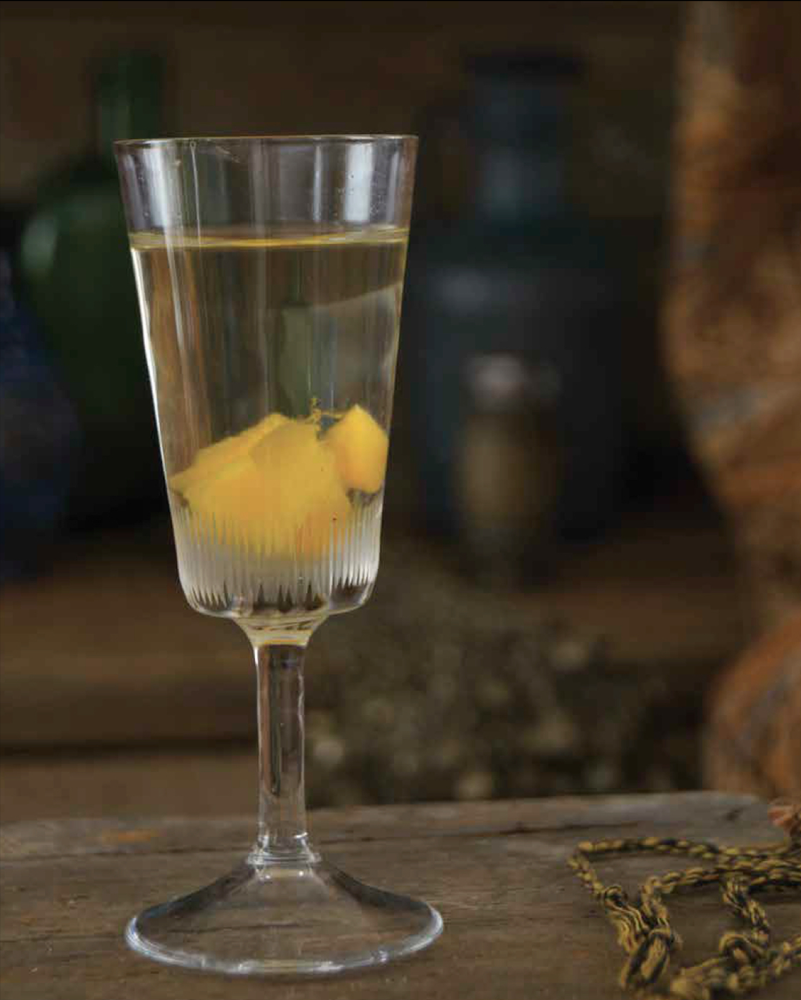

Skooma

Description
Because skooma is so highly sought after, yet so illegal, some
enterprising innkeepers across Tamriel have cooked up their
own version of a cordial that mimics that addictively sweet
drnk so loved by the Khajiit.
Ingredients Needed
- Sugar - 1 cup
- Boiling Water - 3/4 cup
- Vodka - 2 cups
- Pitted Dried Apricots, Diced - 10
- Pinch of ground cardamom
- Dash of vanilla extract
Preparing the Drink
- Combine the sugar and boiling waer in a small heat-proof container,
and stir until the sugar has dissolved. Pour into a clean bottle, then
add the remaining ingredients. Cap the bottle and sit somewhere
dim to infuse, shaking occasionally.
- Allow to steep for 2 to 3 weeks, or up to 1 month for maximum
flavor. Strain out the apricots and store the skooma in a glass bottle.
- Serve in small cordial glasses